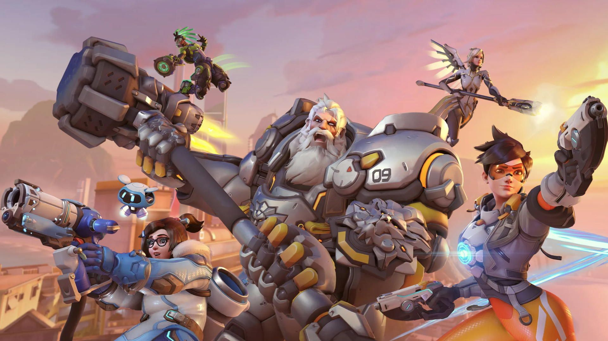

Overwatch 2
Overwatch fue el juego multijugador del momento en 2016, en 2022 se actualizó gran parte de su contenido y se mejoraron muchos de sus aspectos, pero se le renombró y lanzó como Overwatch 2. Se deshizo de muchos de sus modos y añadió muchos otros nuevos. Aunque a Overwatch no le ha ido tan bien desde su lanzamiento.

Click en la imagen para ir a la página oficial.
çAl igual que Counter Strike 2, trajo muchísimos problemas el día de su salida dado que el juego no estaba pulido tampoco y la optimización era decepcionante.
Mecánicas principales
Las mecánicas principales de este juego son más complejas, pero simples en su práctica, se basa en intentar ganar las máximas kills posibles, con posibilidad de resurreciones y acabando las partidas cuando el enemigo tiene a todo el equipo muerto a la vez. El juego es bastante caótico.
El tema del apartado shooter, es más parecido a lo habitual, mientras dispares al pecho, basta, pues te harán más daño las habilidades de los héroes.
Realmente, Overwatch 2 ha pasado más desapercibido y no tiene mucho más que indagar a no ser que quieras contenido avanzado del juego.